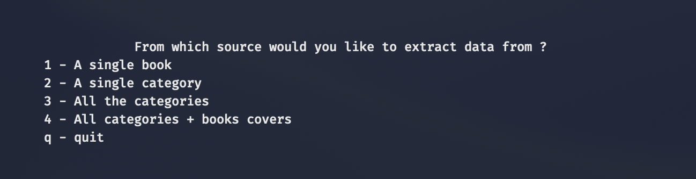

Book Scraper,
l'assistant catalogue de livres.
Book Scraper est un script Python complet pour extraire automatiquement les informations de livres du site Books to Scrape. Il récupère le titre, le prix, le stock, la note, la description et l'image de couverture de chaque livre, puis exporte ces données en fichiers CSV classés par catégorie.
Le script peut également télécharger toutes les images de couverture (en option)
et navigue automatiquement à travers les pages du site (pagination).
- > Scraping de toutes les catégories de livres
- > Récupération des titres, prix, stock, note, description, image
- > Export des données en CSV par catégorie (dossier
output_data/) - > Téléchargement des images de couverture (en option)
- > Navigation automatique entre les pages (pagination)
// Menu du terminal
// Exemple de fichier CSV généré par Book Scraper
| product_url | universal_product_code | title | price_including_tax | price_excluding_tax | number_available | product_description | category | review_rating | image_url |
|---|---|---|---|---|---|---|---|---|---|
| https://books.toscrape.com/catalogue/rip-it-up-and-start-again_986/index.html | a34ba96d4081e6a4 | Rip it Up and Start Again | £ 35.02 | £ 35.02 | In stock (19 available) | Punk’s raw power rejuvenated rock, but by the summer of 1977 the movement had become a parody of itself. RIP IT UP AND START AGAIN is a celebration of what happened next.Post-punk bands like PiL, Joy Division, Talking Heads, The Fall and The Human League dedicated …more | Music | 5/5 | https://books.toscrape.com/media/cache/81/7f/817f5089c0e6e62738dce2931e7323d3.jpg |
{kind=link}